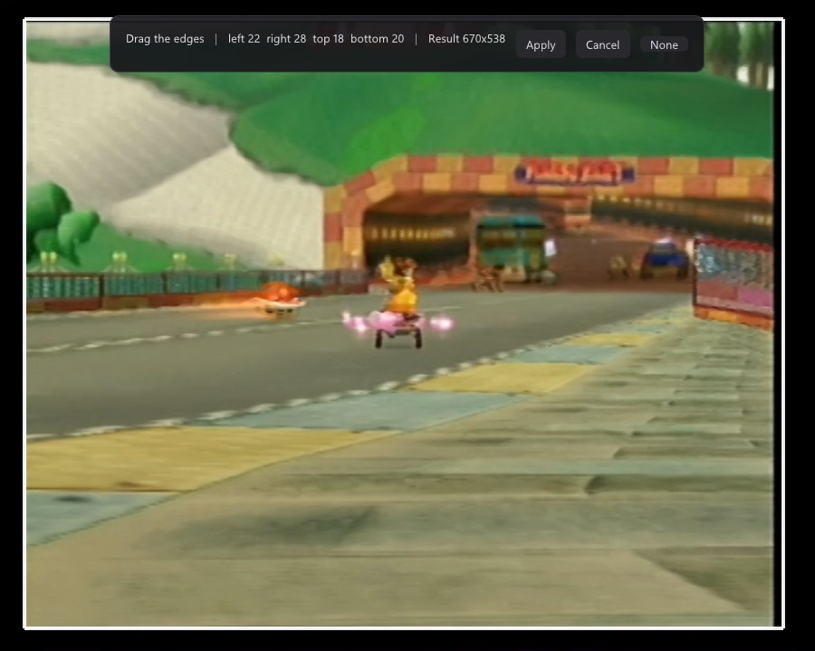
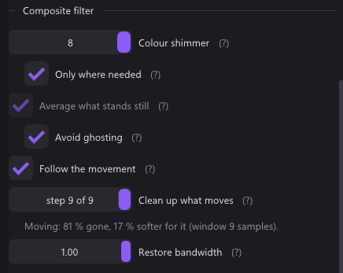
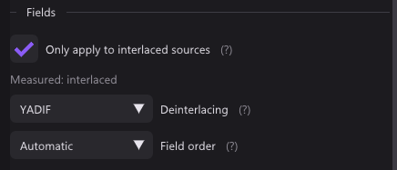
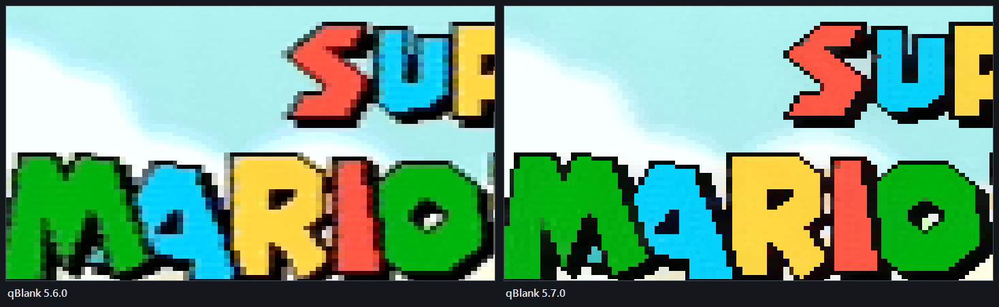
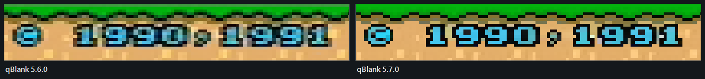

qBlank
Jede Konsole über die Capture Card spielen. Ein schlanker Viewer und Recorder mit niedriger Latenz für Windows.
Eine Datei, etwa 2,4 MB. Kein Installer, nichts in der Registry.
Jede Konsole über die Capture Card spielen. Ein schlanker Viewer und Recorder mit niedriger Latenz für Windows.
Eine Datei, etwa 2,4 MB. Kein Installer, nichts in der Registry.

Keine Warteschlange, keine Uhr, kein Warten auf VSync. Was qBlank zur Karte selbst hinzufügt, ist etwa eine Millisekunde, und die Statistik zeigt es an.
Bilder landen in einem Dreifachpuffer, und der Filter kehrt sofort zurück. Was schneller kommt, als es angezeigt werden kann, wird verworfen, nie gepuffert. So kann sich keine Verzögerung aufstauen.
Der DirectShow-Graph läuft ohne Referenzuhr. Nichts wird zurückgehalten, um auf einen Anzeigezeitpunkt zu warten.
Eine Flip-Model-Swapchain mit einem Bild Warteschlange und standardmäßig ohne VSync: der größte Hebel, den es gibt. Standardmäßig Direct3D 11, Vulkan als Option, nach denselben Regeln.
YUY2, UYVY, NV12, planares 4:2:0, RGB und P010 werden in einem Pixel-Shader entpackt. Zwischen Eintreffen und Zeichnen fasst die CPU nichts an.
Die Statistik misst die Strecke, für die qBlank verantwortlich ist: vom Eintreffen eines Bildes bis zur Übergabe an die Anzeige, mit Upload, Deinterlacing, Filtern und Skalierung. Was die Karte davor und der Bildschirm danach tun, ist nicht eingerechnet.
Für jedes DirectShow-Gerät: HDMI- und analoge Karten, USB-Sticks, Webcams.
H.264, H.265 oder AV1 über NVENC, Quick Sync, AMF, x264 oder x265. Der Ton ist die Hauptuhr, deshalb hat die Aufnahme eine konstante Bildrate und driftet nicht: gemessen 1 ms über 15 Sekunden. Der freie Platz auf dem Laufwerk wird als Aufnahmezeit angezeigt, und eine Aufnahme stoppt selbst, bevor das Laufwerk voll ist.
Ratensteuerung, Preset, Tuning, Look-ahead, adaptive Quantisierung und Multipass unter einheitlichen Namen, übersetzt in die Begriffe jedes Herstellers.
Der Ton der Karte oder jedes Windows-Aufnahmegerät, ausgegeben über WASAPI, Taktdrift wird laufend ausgeglichen. Ein Mikrofon kann auf eine eigene Spur der Aufnahme und wird nie wiedergegeben.
PNG oder JPEG in Quellauflösung über die Windows Imaging Component, ganz ohne ffmpeg. JPEG XR behält den HDR-Umfang und braucht auch keins, AVIF schon. Ein Schalter nimmt stattdessen das fertige Fenster samt Oberfläche auf, und Strg+F10 legt das Bild in die Zwischenablage statt auf die Platte.
Gib das Bild an OBS, Discord oder einen Browser weiter, in Auflösung und Bildrate der Quelle — und an alles, was das nicht annimmt, in dem Format, das es stattdessen verlangt.
PQ und HLG werden in lineares Licht umgerechnet und mit BT.2390 für einen normalen Bildschirm tone-gemappt oder als scRGB an einen HDR-Bildschirm durchgereicht.
Gerät, Eingang, Aufnahmeformat und jede Bild- und Toneinstellung, eines pro Quelle, auf Strg+1 bis Strg+9 — oder ganz ohne Taste: Ein Profil kann die Videonorm nennen, zu der es gehört, und die Norm, die die Suche findet, wählt dann das Profil.
Jede Einstellung wirkt ab dem nächsten Bild, du beurteilst sie also am Bild statt aus dem Gedächtnis. Wo ein Wert leichter zu sehen als einzutippen ist, stellst du ihn direkt am Bild ein.


Auf einem eigenen Grafikgerät, damit es auf einem zweiten Bildschirm liegen kann, während das Bild auf dem ersten läuft. Regler, die für die Quelle nicht gelten, fehlen, statt ausgegraut zu sein.
Strg+F findet jede Einstellung, auch mit Tippfehlern und unter den Namen, die andere Programme verwenden. Ein Rechtsklick setzt einen Regler auf den Standard zurück.
Voll oder begrenzt wird am Bild abgelesen statt aus dem Pixelformat geschlossen, mit den Zahlen hinter dem Urteil. F6 misst neu, für das eine, was sich ändert, ohne das Format anzufassen: eine Option im Treiber der Karte.
Umschalt+F12 zeigt das Signal so, wie es ankommt, mit Deinterlacing, Zuschnitt und Seitenverhältnis — die schnelle Antwort auf die Frage, ob ein Filter das Problem ist.
1×, 2× oder 3× die Quelle aus dem Rechtsklickmenü, und Umschalt hält beim Ziehen die Form. Rahmenlos behält Taskleistenknopf und Snap; ein roter Punkt darauf zeigt, dass aufgenommen wird.
Ein optionales Symbol mit den Aktionen deiner Wahl — Aufnahme, Screenshots, Ordner, Profile — im selben Menüstil wie alles andere. Verknüpfungen im Startmenü und auf dem Desktop liegen einen Knopf entfernt.
Eine analoge Quelle braucht mehr, als ein Viewer sonst bietet. qBlank findet die Videonorm, deinterlaced, räumt Composite auf und kann die Scanlines zurückbringen — alles in Echtzeit.
Composite führt Farbe und Helligkeit über eine Leitung, und beide sickern ineinander. Die meisten Viewer lassen das, wie es ist. qBlank entfernt es in Echtzeit, und die Zahlen hinter jeder Einstellung wurden an echter Hardware gemessen statt geraten.

| Teil | Was er tut | Was er kostet |
|---|---|---|
| Erweiterte Historie | Schaut zwölf Bilder zurück und nimmt den Dot Crawl aus jedem Bild, bevor der Rest es liest, auch wo sich etwas bewegt oder überblendet: um Text herum, in Transparenzen. Wo sich der Crawl alle zwei oder vier Bilder wiederholt: PAL, PAL 60, PAL M, PAL N, NTSC. | GPU-Zeit, kein Bild Verzögerung. |
| Stillstehendes mitteln | Hebt Dot Crawl überall dort auf, wo das Bild stillsteht, gemittelt über den für die Quelle gemessenen Crawl-Zyklus. Vier Bilder bei PAL — gemessen 1,91, 2,62, 1,90 und 0,78 bei Abständen von eins bis vier —, sonst zwei oder drei. | Gar nichts. |
| Synchron-Demodulator | Rekonstruiert den Farbträger aus der Helligkeit und zieht ihn ab, so ist auch Bewegtes abgedeckt. Entfernt 81 % des Musters bei einem Fenster von neun Samples. | 17 % der horizontalen Schärfe. |


Ob eine Quelle interlaced ist, wird am Bild gemessen, nicht aus dem Medientyp gelesen — ein Medientyp darf das angeben und tut es oft nicht.


Ein analoger Decoder muss wissen, ob er PAL, NTSC oder SECAM vor sich hat, und ein Fehler kostet entweder das Bild oder die Farbe. Lass es auf Automatisch, und qBlank findet sie — und findet sie immer wieder, sodass der Wechsel einer Konsole zwischen 50 und 60 Hz nichts von dir braucht.
Ein Decoder meldet nur, ob er eingerastet ist, und das hängt an der Zeilenfrequenz. PAL 60, NTSC M, PAL M und NTSC 4.43 rasten alle auf denselben 525 Zeilen ein, und er meldet die falsche Norm genauso überzeugt.
Die Kandidaten werden an dem verglichen, was sie tatsächlich liefern: wie viel Farbe da ist und ob Schwarz schwarz bleibt. PAL als SECAM dekodiert gibt kein graues Bild — es gibt ein knallrotes, wo Schwarz sein sollte, und genau das fängt die zweite Messung.
Gemessen an einem GameCube mit 60 Hz, ausgehend von einer absichtlich falschen Norm: 1,7 bis 2,4 Sekunden. Die Liste wird erst schnell durchlaufen und nur dann geduldig, wenn das nichts findet, so ist eine zwischen 50 und 60 Hz umgeschaltete Konsole in einem Bruchteil der Zeit erledigt.
PAL 60 und NTSC 4.43 tragen die Farbe auf derselben Frequenz und unterscheiden sich nur darin, dass PAL die Phase jede zweite Zeile umkehrt. Die falsche der beiden dekodiert keinen Unsinn — sie dekodiert weniger, und Farbe zu zählen belohnt sie für das Weglassen. qBlank misst stattdessen die Umkehr selbst und verwirft die Norm, die gegen das Signal arbeitet.
F7 führt beide Stufen am aktuellen Bild noch einmal aus — für den einen Fall, den die automatische Suche nicht sehen kann, weil falsche Farbe trotzdem Farbe ist. Das dauert unter zwei Sekunden und sagt dir in jedem Fall, was es gefunden hat.
Eine Karte bietet dieselbe Formatliste an, egal was an ihr steckt. Steht die Norm fest, steht auch das Raster fest, also passt die standardmäßig angebotene Auflösung zu dem, was wirklich ankommt, statt eine Konsole in der Karte auf 1080p hochzurechnen — und die Bildratenliste bekommt die Rate des Signals: 50 bei PAL, 59,94 bei NTSC, glatte 60 bei PAL 60.
Ein Vergleich braucht ein Bild, an dem er vergleichen kann. Bewegt sich die Szene während der Runde oder ist der Bildschirm im Grunde schwarz, wird die Runde verworfen statt geglaubt — eine falsche Antwort, fest gehalten, ist schlimmer als einen Moment zu warten.
240p-Grafik wurde für einen Bildschirm gezeichnet, der Lücken zwischen seinen Zeilen und eine farbige Maske über seinen Leuchtstoffen hatte. Auf einem Flachbildschirm ist das Fehlen beider selbst eine Verfälschung. Standardmäßig aus und nur für die Anzeige — eine Aufnahme nimmt das Bild vor diesem Schritt ab.

Eine Karte, die bei 720p anfängt, oder ein Stick mit eigenem Scaler liefert 1080 Zeilen von einer Konsole, die 480 gezeichnet hat — und nichts im Bild sagt zuverlässig, welche Zahl echt ist. Bei Zeilen der Quelle sagst du es: 240 und 288 für ein SNES, Mega Drive, PS1 oder N64 mit 60 oder 50 Hz, 480 und 576 für GameCube, PS2, Dreamcast oder Wii. PAL 60 ist die Ausnahme — das Raster von NTSC mit der Farbe von PAL.
Die angegebene Zahl wird zur Anzahl Ausgabezeilen pro echter Bildzeile, und damit ist eine skalierte Aufnahme kein Problem mehr: 1080 Zeilen von einer 480-Zeilen-Konsole sind 2,25 Zeilen pro Bildzeile, und die Scanlines liegen auf den Zeilen, die die Konsole wirklich gezeichnet hat, nicht auf denen, die der Scaler erfunden hat.


Scanline() und Mask() über ein Standbild liefen, nicht als Foto vom Bildschirm: Die Effekte sind bewusst nur für die Anzeige, ein Screenshot in qBlank enthält sie also nicht.Eine Karte tastet eine Zeile 720-mal ab, ein SNES hat 256 gezeichnet. Sag qBlank die Breite der Quelle, und es misst, wo jedes Konsolenpixel im Bild liegt, und zeichnet es als einen Block. Bei einer analogen Quelle baut es jedes Pixel außerdem aus den Samples neu, über die die Karte es verwischt hat.


Szenen, Overlays, Compositing und Streaming gibt es nicht und sind nicht geplant. Dafür nimm OBS — und beachte, dass eine Karte ihren Aufnahme-Pin immer nur einem Prozess gibt, beide können dieselbe Karte also nicht gleichzeitig halten.
| Voraussetzung | |
|---|---|
| Windows 10 oder neuer | die virtuelle Kamera installiert sich mit einer UAC-Abfrage |
| Ein DirectShow-Aufnahmegerät | fast jede Karte, auch per USB |
| ffmpeg | für Aufnahmen und AVIF-Screenshots, per Knopf geladen und aktuell gehalten |